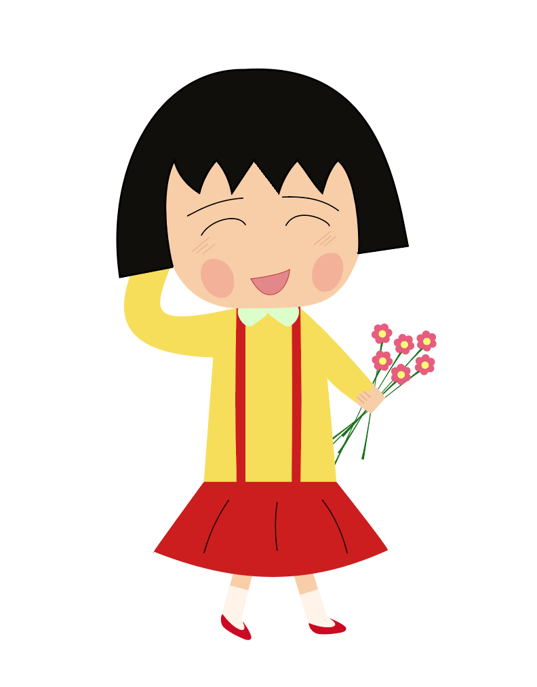

Tema 2 - Animation
Dette har været det mest udfordrende tema for mig. Jeg var desværre syg i første del af temaet, hvilket gjorde det meget svært for mig at være helt med fra start.
Egen animation
Det var spændende at lære hvordan man tegner skitser og herefter designer animationskarakterer baseret på deres personlighed. Javascript er helt klart en af de ting, som jeg ønske at blive bedre til.
Endelig aflevering
Da den endelige aflevering var en gruppeopgave, var der større held i at nå i mål, fordi man var flere om opgaven. Her prøvede vi hver især at byde ind med det vi kunne, så vi kunne nå at aflevere til tiden.
